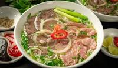

Description
Pho is a Vietnamese soup consisting of bone broth, rice noodles, and thinly sliced meat (usually beef). It may also be served with bean sprouts, fresh herbs, limes, chiles, and other garnishes.
Ingredients
- 1.5kg / 3 lb brisket
- 1kg / 2 lb meaty bones
- 1kg / 2 lb marrow bones
- ginger, onion
- cinnamon, cardamom, coriander, star anise
- sugar, salt, fish sauce
Step
- Quick boil - Remove impurities from beef with a 5 minute boil, it's the path to a beautiful clear soup
- Scum - be amazed at all the icky stuff that comes out
- Wash the bones to get all the icky scum off
- Simmer for 3 hours - bones, beef, water, onion, ginger and spices (cinnamon, cardamom, coriander, star anise)
- Remove brisket - some is used for Pho topping, see below recipe for ways to use remainder
- Simmer 40 minutes further with just bones
- Strain
- Ladle into bowls over noodles and pile on Toppings!